Префектура Киото · Киото, Годзёдзака · ремесло
Дом Кандзиро Каваи: где в Киото начиналось движение мингэй
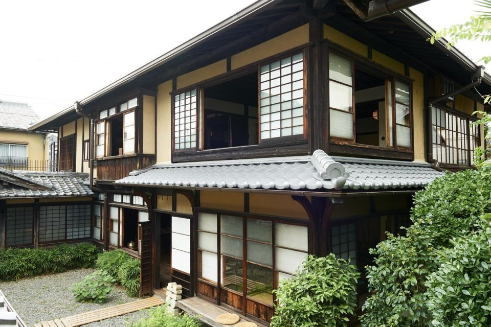
Незадолго до рождения движения мингэй молодой гончар Кандзиро Каваи открыл свою печь у склона Годзёдзака в Киото. Его дом с мастерской стал местом, где собирались единомышленники, а сегодня это музей, с которого стоит начинать прогулку по Киото мастеров.
Мастер
Гончар, которого раскритиковали
Будущий мастер решил стать гончаром ещё школьником, окончил керамическое отделение Токийского высшего технического училища и приехал в Киото, чтобы поступить в городской институт испытаний керамики. Тогда туда съезжались самые многообещающие молодые мастера, которые хотели придумать фарфор следующего поколения. Через два года после Каваи туда пришёл и Сёдзи Хамада (1894–1978), гончар, с которым они позже вместе поведут движение мингэй.
Три года Каваи проработал в институте, а потом остался в Киото. В 1920 году он получил дом и печь в квартале Канэимати у склона Годзёдзака, и уже на следующий год вышел с первой персональной выставкой.
«Каваи ворвался в мир с работами в стиле старинного китайского фарфора. И ему повезло: его сразу высоко оценили, о нём заговорили как о многообещающем молодом гончаре. А потом его жёстко раскритиковал господин Янаги»
внучка мастера, хранительница музея
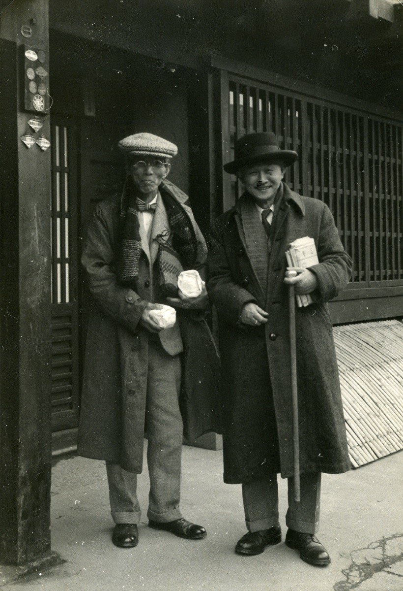
Соэцу Янаги (1889–1961), философ и будущий теоретик движения мингэй, тогда жил под Токио. Его уже привлекали вещи безымянных ремесленников, но мысль о том, что именно в народных предметах быта и кроется суть красоты, ещё не сложилась. В Киото его привело Великое землетрясение Канто 1923 года: Янаги потерял дом и близких, получил место в университете и переехал.
«Сначала они держались друг с другом настороже. Свёл их Сёдзи Хамада. Из письма Каваи он узнал о землетрясении, вернулся из Англии и первым делом пришёл в дом Каваи. А потом повёл его к Янаги»
внучка мастера, хранительница музея
После этой встречи изменились и работы Каваи, и его жизнь. В доме у склона Годзёдзака видно, как это происходило и к чему привело, поэтому прогулку по Киото мингэй лучше всего начинать именно здесь.
Дом
Жить и работать под одной крышей
Нынешний дом Каваи спроектировал сам и закончил его в 1937 году. Мебель и утварь тоже сделаны по его рисункам, а рядом выставлены вещи, которые он собирал по собственному вкусу. Хозяин любил долгие разговоры с близкими по духу людьми, поэтому гостиная здесь просторная: в ней собирались и спорили участники движения мингэй.
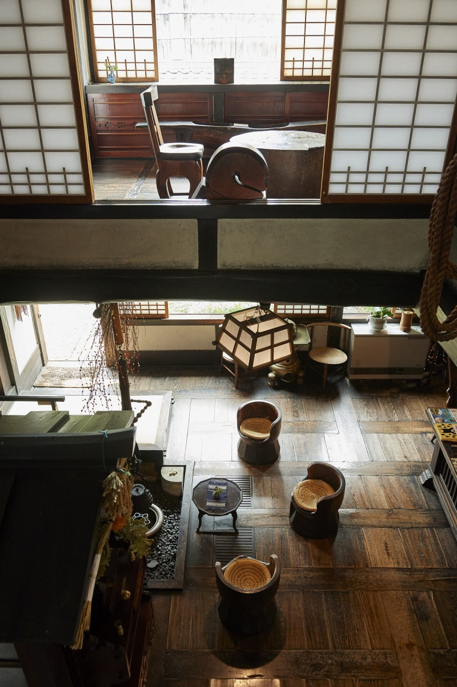
Жилые комнаты, мастерская и печь стоят на одном участке. За жилой частью находятся гончарный круг и нобори-гама, ступенчатая печь, поднимающаяся по склону. Внучка мастера выросла в этом доме, ей было девять лет, когда деда не стало. Она вспоминает: работа и быт здесь не разделялись. Каваи трудился, принимал множество гостей, и разговоры шли о красоте. В саду рядами стояла керамика, а над ней сушилось бельё.
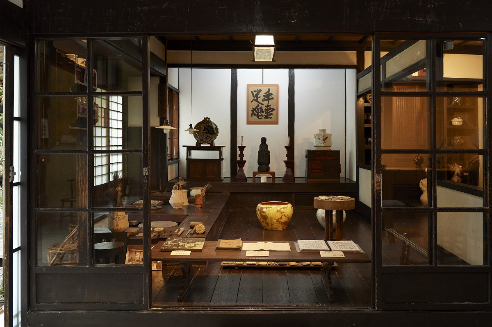
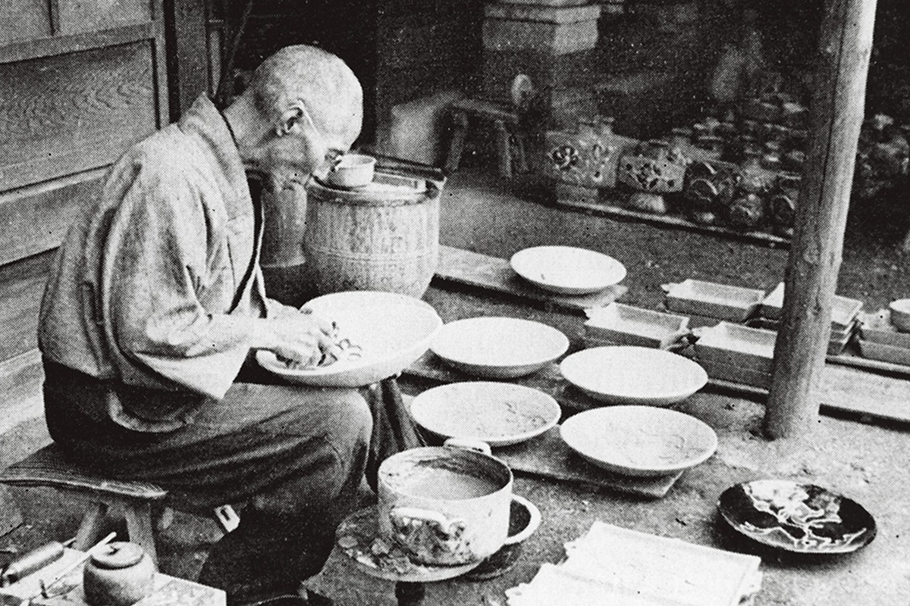
Слова
«Жизнь это работа, работа это жизнь»
Каваи работал не только с глиной: он резал по дереву, придумывал вещи, много писал. Его слова и сегодня читают как советы о том, как жить, и почти все они о работе.
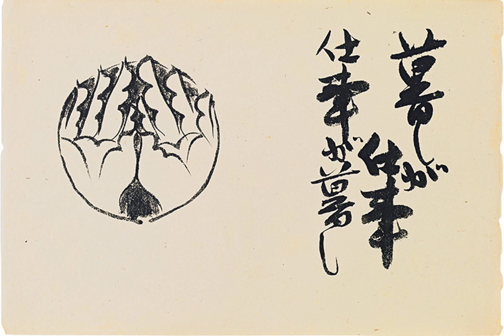
Для Каваи работа была неотделима от жизни. Он был убеждён, что красивая и честная работа рождается только из красивой и честной жизни. Поэтому он с огромным уважением относился к крестьянам, которые работают от восхода до заката. В одном из очерков он писал, что зерно и овощи можно вырастить, но нельзя сделать: в работе, где что-то делают, можно схитрить, а в работе, где что-то растят, нельзя. Его собственным делом была керамика, но и в ней, по словам внучки, он стремился к такой же честности.
«Хочу увидеть себя нового: и работаю»
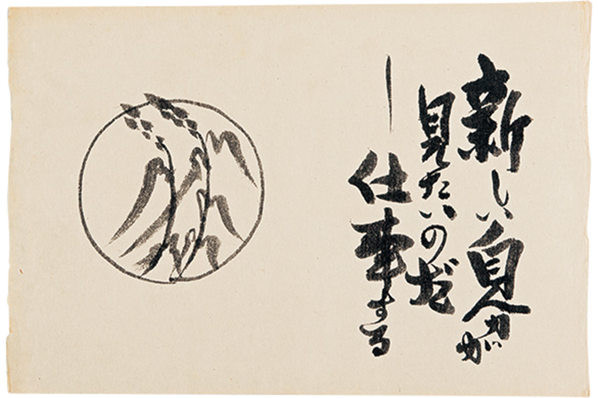
За свою жизнь Каваи сделал огромное число вещей, и разгадка его энергии в этой фразе. Даже технику, которой он добивался долго и мучительно, он легко оставлял, как только осваивал её, и шёл дальше: ему было интересно, что ещё родится у него внутри. Он сам писал, что пришёл в этот мир искать себя и смотреть на себя. К своей фразе он добавил пояснение:
«Вчерашний я никому не нужен. Повторения не нужны. Даже когда думаешь, что повторяешь, в этом повторении всё равно ищешь себя, который не повторяется»
Кандзиро Каваи
Повторяющуюся работу он не отрицал: двух одинаковых вещей не бывает, и именно это движет человеком. Сам он всё время искал новые формы и цвета, но горячо поддерживал и тех, кто изо дня в день молча делает одно и то же.
«Лягушка в колодце знает небо»
Есть старая поговорка, восходящая к Чжуан-цзы: лягушка в колодце не знает океана. Её говорят о человеке с узким кругозором. Каваи переиначил её: лягушка в колодце знает небо. Тот, кто сидит в узком колодце, разбирается в небе лучше всех. Так поговорка о невежестве превратилась в похвалу ремесленнику, учёному и любому безымянному человеку, который всю жизнь идёт одной дорогой.
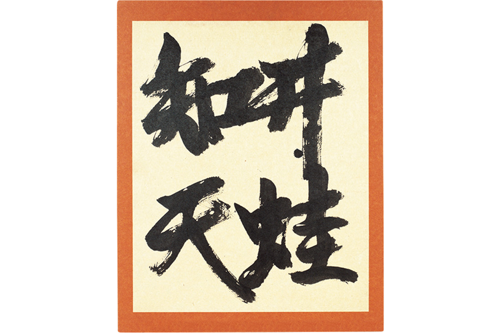
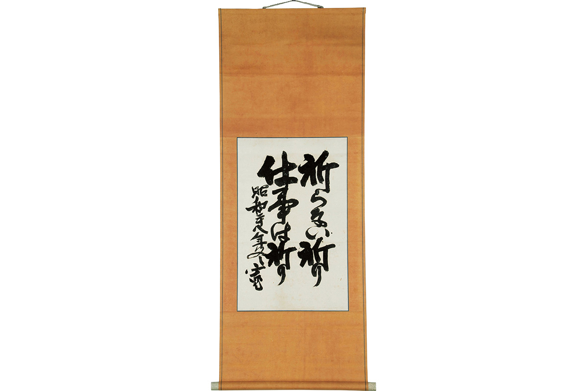
«Молитва без молитвы»
Каваи был глубоко религиозным человеком. Он жил в мире искусства, где главное это самовыражение, но стремился туда, где «я» и «другой» сливаются, и с благодарностью принимал силу земли, огня, воды и дерева, без которых его работы не было бы. Он не читал сутр и не произносил молитв, но благодарность за то, что живёшь и можешь работать, выражал каждый день своим ремеслом.
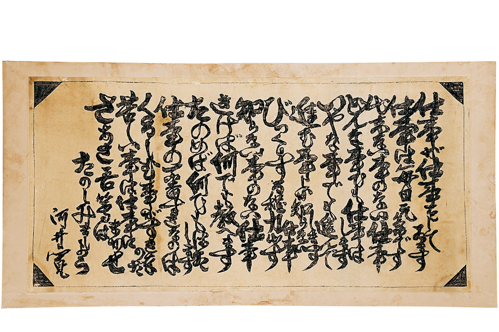
Его стихотворение «Работа» начинается словами «Работа делает работу». Работа в нём ничего не боится, всё знает и за всё берётся, а больше всего любит трудности. Заканчивается оно так:
«Трудное оставим работе, а сами давайте радоваться»
Кандзиро Каваи
С этими строчками даже тяжёлый день кажется легче. Но за весёлым тоном стоит глубокая мысль: настоящая работа начинается, когда человек и его дело сливаются так, что уже не понять, ты делаешь работу или работа делает тебя.
Дом-музей Кандзиро Каваи
- Адрес
- префектура Киото, Киото, район Хигасияма, Годзёдзака Канэимати, 569
- Телефон
- +81 75-561-3585
- Часы работы
- 10:00–17:00 (вход до 16:30)
- Выходные
- понедельник (если праздник, то следующий день), летние каникулы примерно 11–20 августа, зимние примерно с 24 декабря по 7 января
- Цены / Вход
- взрослые 900 иен, студенты и старшеклассники 500 иен, школьники 300 иен, годовой абонемент 3000 иен
- Сайт
- kanjiro.jp
Сладкое
Леденцы в деревянной собаке
Всё в доме наполнено миром Каваи, но одну вещь стоит найти обязательно. Слева от письменного стола стоит подлокотник в виде собаки-стража комаину. Каваи сам вырезал его из столба старой мебели. Внутри фигура полая, и в ней можно хранить вещи: до последних лет жизни мастер держал там сладости, в том числе любимые рубленые леденцы кири-амэ.
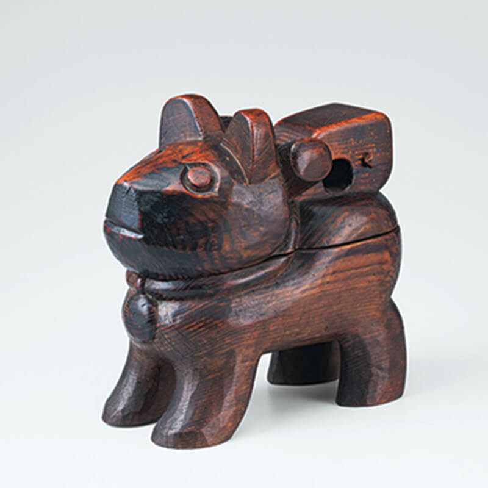
Откуда леденцы, рассказала внучка мастера: из лавки «Госё-амэ хомпо», которая издавна стоит у моста Сандзё-кобаси. Мимо неё проходил любимый маршрут прогулок Каваи.
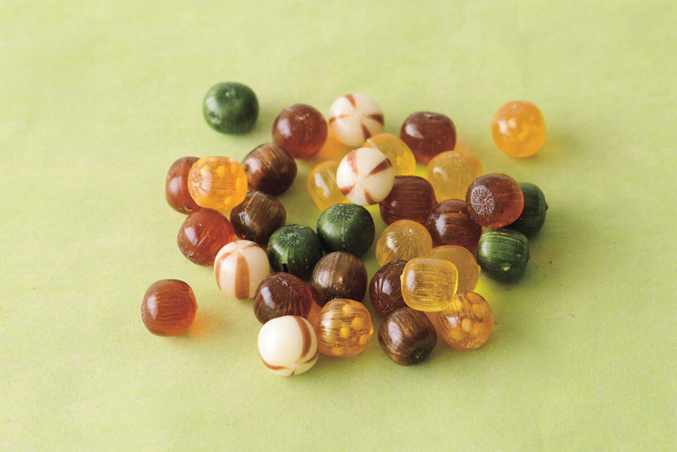
Фирменные «Госё-амэ» продаются набором из шести вкусов: чай из Удзи, чёрный сахар, рисовые крекеры арарэ, «роскошный» леденец, молочный и карамель бэкко. Вкусы разные, и все хороши. Красная жестяная банка на 120 граммов в 2019 году стоила 750 иен.
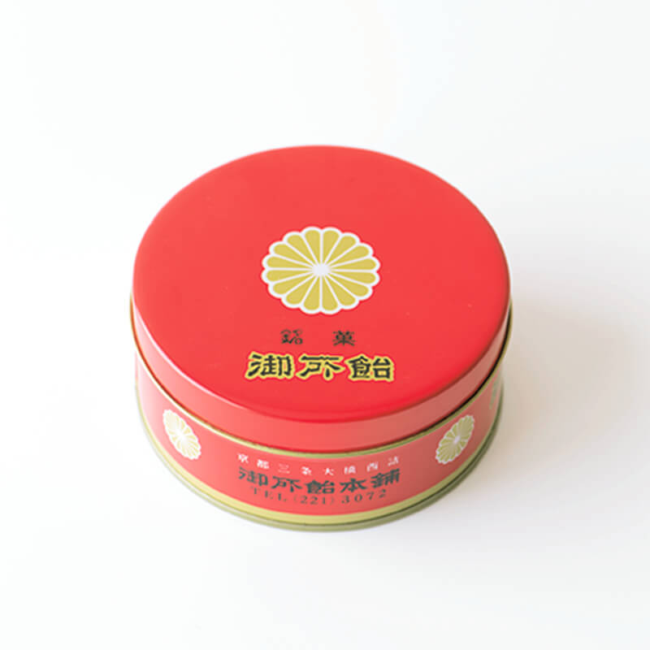
«Госё-амэ хомпо»
- Адрес
- префектура Киото, Киото, район Накагё, Сандзё Каварамати Хигаси-иру, Накадзима-тё, 98
- Телефон
- +81 75-213-3800
- Часы работы
- 11:00–21:00
- Выходные
- нерегулярно
- Сайт
- goshoame.co.jp
Фото: Сайури Оно, Вакана Баба, Мемориальный музей Кандзиро Каваи.